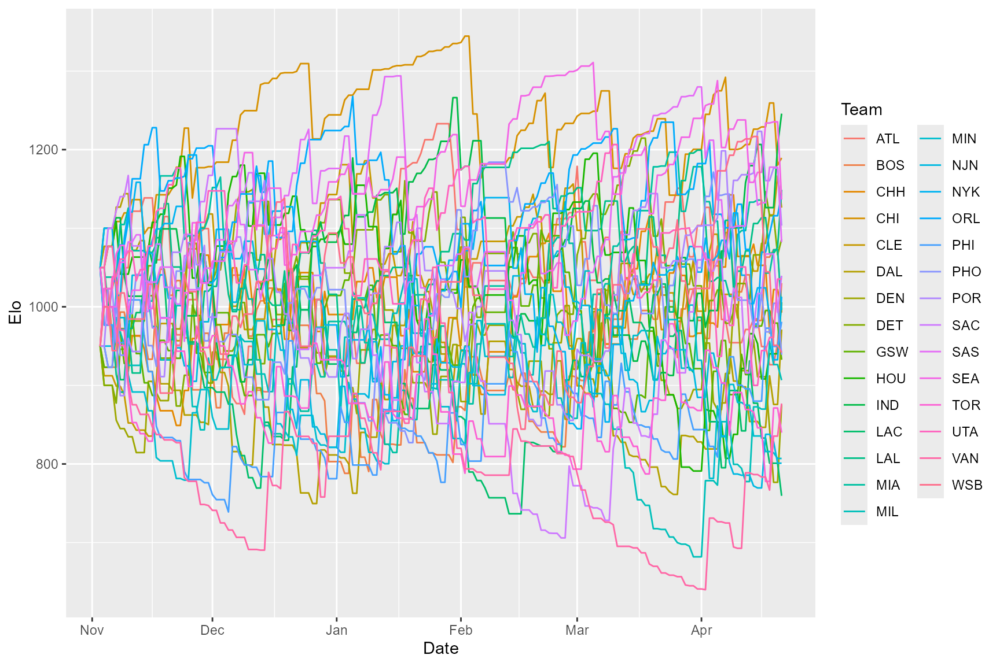
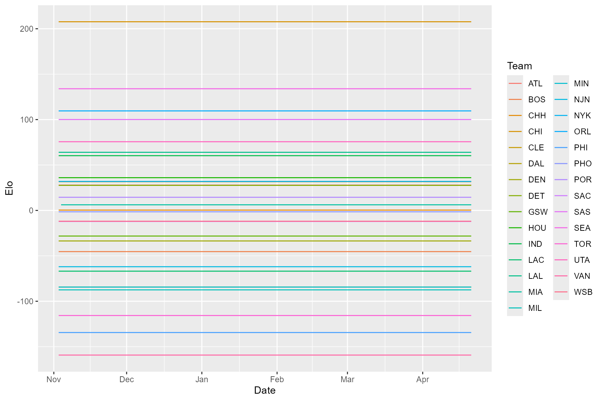

A familiar example may be useful for understanding the different fitting options available in the EloOptimized package. We included in the package a data frame with game results from the 1995-1996 NBA regular season. We used NBA data because games can’t end in a tie, teams play all other teams over the course of the season, and there’s a manageable set of teams for visualization purposes. During the 1995-1996 season, the Chicago Bulls went 72-10 (until recently the best record in NBA history), had a winning record against all but one team (the Pacers, against whom they went 2-2), and went on to win the championship. Therefore we would expect a reasonable ranking method to assign them the highest rank score by the end of the season. First we’ll use a traditional Elo ranking approach to assign Elo scores using eloratingfixed(), and then we’ll show how maximum likelihood fitting changes ranking.
First, let’s load the packages we’ll need (we’re using a couple tidyverse packages for post-fitting data manipulation and visualization):
Next, using the nba dataset that’s included with the EloOptimized package, let’s calculate traditional Elo scores for each team. Note that you don’t have to supply pres_data if all individuals (in this case teams) are present for the entire period of interest.
res = eloratingfixed(agon_data = nba) #> k = 100 #> prediction accuracy = 0.636
Because we did not specify a k value, the function used the default value of k =100. We find that the prediction accuracy, the proportion of correctly predicted contests, is 0.636.
We can access the data frame of Elo scores using res$elo, and use ggplot2 to quickly visualize each team’s trajectory.
head(res$elo) #> Date Individual Elo EloOrdinal EloScaled ExpNumBeaten EloCardinal #> 1 1995-11-03 ATL 950 15 0 10.26518 0.3801918 #> 2 1995-11-03 BOS 950 16 0 10.26518 0.3801918 #> 3 1995-11-03 CHH 950 17 0 10.26518 0.3801918 #> 4 1995-11-03 CHI 1050 1 1 16.73482 0.6198082 #> 5 1995-11-03 CLE 950 18 0 10.26518 0.3801918 #> 6 1995-11-03 DAL 1050 2 1 16.73482 0.6198082 #> JenksEloCardinal #> 1 low #> 2 low #> 3 low #> 4 mid #> 5 low #> 6 mid res$elo %>% rename(Team = Individual) %>% ggplot(aes(x = Date, y = Elo, color = Team)) + geom_line()

There’s a lot of noise in that plot, but if you look closely you’ll notice that Chicago doesn’t end the season with the highest Elo score. There were 29 teams in the NBA in the 95-96 season, so we can check final Elo scores directly by sorting the the last 29 rows of the Elo scores data frame (we’re removing a couple columns to make the output easier to read. See eloratingfixed() documentation for descriptions of each column):
tail(res$elo, 29) %>% arrange(-Elo) %>% select(-ExpNumBeaten, -JenksEloCardinal) #> Date Individual Elo EloOrdinal EloScaled EloCardinal #> 1 1996-04-21 IND 1245.7977 1 1.00000000 0.8921359 #> 2 1996-04-21 CHI 1189.4438 2 0.88412548 0.8285396 #> 3 1996-04-21 LAL 1148.8256 3 0.80060665 0.7710995 #> 4 1996-04-21 ORL 1143.9716 4 0.79062588 0.7636082 #> 5 1996-04-21 SEA 1136.3944 5 0.77504571 0.7516593 #> 6 1996-04-21 CLE 1126.2214 6 0.75412816 0.7351428 #> 7 1996-04-21 POR 1103.2969 7 0.70699086 0.6960572 #> 8 1996-04-21 DET 1085.9874 8 0.67139911 0.6650044 #> 9 1996-04-21 SAS 1082.3680 9 0.66395701 0.6583624 #> 10 1996-04-21 SAC 1039.5035 10 0.57581931 0.5766225 #> 11 1996-04-21 UTA 1035.3141 11 0.56720509 0.5684016 #> 12 1996-04-21 ATL 1030.2344 12 0.55676014 0.5583972 #> 13 1996-04-21 NYK 1012.8371 13 0.52098795 0.5239154 #> 14 1996-04-21 HOU 1005.7356 14 0.50638599 0.5097854 #> 15 1996-04-21 MIA 995.8435 15 0.48604588 0.4900979 #> 16 1996-04-21 CHH 993.8147 16 0.48187438 0.4860634 #> 17 1996-04-21 BOS 992.4673 17 0.47910374 0.4833848 #> 18 1996-04-21 PHI 980.9616 18 0.45544591 0.4605664 #> 19 1996-04-21 DAL 971.1163 19 0.43520196 0.4411554 #> 20 1996-04-21 WSB 941.8334 20 0.37499078 0.3845020 #> 21 1996-04-21 PHO 938.9166 21 0.36899316 0.3789767 #> 22 1996-04-21 GSW 932.6602 22 0.35612873 0.3672130 #> 23 1996-04-21 MIL 906.6344 23 0.30261463 0.3197463 #> 24 1996-04-21 VAN 876.8816 24 0.24143731 0.2689504 #> 25 1996-04-21 DEN 875.6419 25 0.23888825 0.2669245 #> 26 1996-04-21 TOR 839.8903 26 0.16537596 0.2119247 #> 27 1996-04-21 MIN 806.9891 27 0.09772467 0.1675101 #> 28 1996-04-21 NJN 800.9557 28 0.08531886 0.1600331 #> 29 1996-04-21 LAC 759.4621 29 0.00000000 0.1142200
In fact, Indiana ends up with the highest Elo score on the final day. It turns out that they finished the season 8-1 and beat the Bulls in the second to last game of the season. This suggests that the default K parameter of 100 (which determines the degree to which Elo scores change after each contest) is not the best choice. However, it’s not obvious what the K parameter should be set to. Luckily, the EloOptimized package implements a maximum likelihood approach for fitting the K parameter, so you don’t have to make an arbitrary decision.
To fit the K parameter, we use eloratingopt():
res2 = eloratingopt(agon_data = nba) #> k = 20.315 #> prediction accuracy = 0.663
This takes longer than calculating traditional Elo scores because we’re optimizing the K parameter before generating Elo scores. Note that we’re not optimizing K by trying to maximize the prediction accuracy, we’re instead maximizing the likelihood of each contest result according to the sigmoid probability function defined in Foerster, Franz et al., 2016 1. It turns out that the optimized value of K is closer to 20, and this value improves our prediction accuracy to 0.663. Let’s take a look at our results:
res2$elo %>% rename(Team = Individual) %>% ggplot(aes(x = Date, y = Elo, color = Team)) + geom_line()
Because eloratingopt() implements a burn-in period of 100 interactions, during which K is fixed at 100, Elo ratings at the start of the season remain volatile, followed by more stable Elo scores over the course of the season. It looks like Chicago’s on top this time, but let’s double check:
tail(res2$elo, 29) %>% arrange(-Elo) %>% select(-ExpNumBeaten, -JenksEloCardinal) #> Date Individual Elo EloOrdinal EloScaled EloCardinal #> 1 1996-04-21 CHI 1177.8359 1 1.00000000 0.8386881 #> 2 1996-04-21 SEA 1140.5106 2 0.88692465 0.7832719 #> 3 1996-04-21 ORL 1113.0755 3 0.80381134 0.7361461 #> 4 1996-04-21 SAS 1100.7260 4 0.76639921 0.7132868 #> 5 1996-04-21 LAL 1093.7974 5 0.74540937 0.7000471 #> 6 1996-04-21 IND 1086.4912 6 0.72327570 0.6857814 #> 7 1996-04-21 POR 1056.9233 7 0.63370092 0.6252334 #> 8 1996-04-21 UTA 1045.9352 8 0.60041328 0.6017757 #> 9 1996-04-21 CLE 1042.7688 9 0.59082082 0.5949394 #> 10 1996-04-21 DET 1038.1939 10 0.57696114 0.5850086 #> 11 1996-04-21 ATL 1033.9673 11 0.56415707 0.5757830 #> 12 1996-04-21 MIA 1022.6144 12 0.52976401 0.5508001 #> 13 1996-04-21 NYK 1011.7685 13 0.49690671 0.5267319 #> 14 1996-04-21 CHH 1008.7038 14 0.48762236 0.5199082 #> 15 1996-04-21 WSB 1007.6354 15 0.48438576 0.5175279 #> 16 1996-04-21 PHO 1004.2092 16 0.47400627 0.5098903 #> 17 1996-04-21 HOU 994.7168 17 0.44524936 0.4887185 #> 18 1996-04-21 SAC 986.0321 18 0.41893950 0.4693747 #> 19 1996-04-21 BOS 978.3832 19 0.39576781 0.4523980 #> 20 1996-04-21 GSW 967.9455 20 0.36414713 0.4293813 #> 21 1996-04-21 DEN 949.3502 21 0.30781369 0.3890330 #> 22 1996-04-21 DAL 916.3748 22 0.20791615 0.3206720 #> 23 1996-04-21 MIN 906.6146 23 0.17834829 0.3014633 #> 24 1996-04-21 LAC 906.1413 24 0.17691444 0.3005454 #> 25 1996-04-21 NJN 903.9353 25 0.17023146 0.2962846 #> 26 1996-04-21 PHI 895.4348 26 0.14447960 0.2801379 #> 27 1996-04-21 MIL 892.9171 27 0.13685241 0.2754407 #> 28 1996-04-21 TOR 869.2546 28 0.06516794 0.2333204 #> 29 1996-04-21 VAN 847.7431 29 0.00000000 0.1984100
With K optimized, Chicago ends the season with the highest Elo score. The final Elo scores also end up corresponding more closely to the final standings, although they don’t match exactly. For example, the Utah Jazz finished the season with the fifth best record but the eighth best Elo score, which makes sense given their 5-7 record over their last 12 games. But what about that initial period of volatility corresponding to the burn-in period? Can we do better? The EloOptimized package also allows you to fit individual initial Elo scores (in which case no burn-in period is implemented). Let’s see what happens when we do that with the NBA data.
To fit both the K parameter and initial Elo scores, we use eloratingopt() with fit_init_elo = TRUE:
res3 = eloratingopt(agon_data = nba, fit_init_elo = TRUE) #> k = 0 #> prediction accuracy = 0.701
This takes quite a bit longer, because we’re going from optimizing one parameter (K) to optimizing 30 parameters (K plus the 29 initial Elo scores). Surprisingly, the optimized value of K is 0 once you’ve fit initial Elo scores, meaning that Elo scores don’t change at all in response to wins and losses. We might take this to mean that, on average, teams’ competitive ability doesn’t change over the course of the season. Note that fitting initial Elo scores with the included male chimpanzee data results in considerably different patterns, so K = 0 is not an inevitable result of fitting initial Elo scores. Note that this time around the prediction accuracy rises to 0.7. Let’s take a look at our results:
res3$elo %>% rename(Team = Individual) %>% ggplot(aes(x = Date, y = Elo, color = Team)) + geom_line()

Now Chicago’s dominance is more strongly reflected in their final Elo score relative to others. It’s easier to see this in the EloCardinal scores, which essentially represents the cumulative probability of winning against all other individuals (i.e. teams) scaled by the total number of other individuals/teams.
tail(res3$elo, 29) %>% arrange(-Elo) %>% select(-ExpNumBeaten, -JenksEloCardinal) #> Date Individual Elo EloOrdinal EloScaled EloCardinal #> 1 1996-04-21 CHI 207.7177658 1 1.00000000 0.8769118 #> 2 1996-04-21 SEA 133.9553779 2 0.79899641 0.7749567 #> 3 1996-04-21 ORL 109.5561794 3 0.73250823 0.7324324 #> 4 1996-04-21 SAS 100.0777751 4 0.70667944 0.7148051 #> 5 1996-04-21 UTA 75.6299080 5 0.64005864 0.6667434 #> 6 1996-04-21 LAL 63.9886291 6 0.60833598 0.6426847 #> 7 1996-04-21 IND 60.2850436 7 0.59824366 0.6348915 #> 8 1996-04-21 HOU 36.0426311 8 0.53218273 0.5824942 #> 9 1996-04-21 NYK 31.9198718 9 0.52094815 0.5733856 #> 10 1996-04-21 CLE 31.6215718 10 0.52013528 0.5727247 #> 11 1996-04-21 ATL 27.8710139 11 0.50991495 0.5643969 #> 12 1996-04-21 DET 27.5978388 12 0.50917054 0.5637890 #> 13 1996-04-21 POR 14.4577181 13 0.47336352 0.5343736 #> 14 1996-04-21 MIA 6.1987047 14 0.45085759 0.5157586 #> 15 1996-04-21 CHH 0.3442824 15 0.43490420 0.5025331 #> 16 1996-04-21 PHO -1.5218941 16 0.42981884 0.4983151 #> 17 1996-04-21 WSB -11.8944890 17 0.40155337 0.4748806 #> 18 1996-04-21 SAC -12.1603637 18 0.40082886 0.4742806 #> 19 1996-04-21 GSW -28.2099584 19 0.35709347 0.4382166 #> 20 1996-04-21 DEN -33.6069809 20 0.34238651 0.4261899 #> 21 1996-04-21 BOS -45.3500183 21 0.31038656 0.4002799 #> 22 1996-04-21 NJN -61.9690707 22 0.26509940 0.3644047 #> 23 1996-04-21 LAC -66.8878710 23 0.25169559 0.3540043 #> 24 1996-04-21 MIN -84.3953176 24 0.20398754 0.3179502 #> 25 1996-04-21 DAL -84.3953296 25 0.20398751 0.3179502 #> 26 1996-04-21 MIL -87.4706128 26 0.19560732 0.3117874 #> 27 1996-04-21 TOR -115.7083976 27 0.11865894 0.2579219 #> 28 1996-04-21 PHI -134.4412811 28 0.06761155 0.2251684 #> 29 1996-04-21 VAN -159.2527265 29 0.00000000 0.1857691
Because each team plays the same number of games, and schedules are fairly balanced, the Elo scores now reflect each team’s overall record. These scores are not useful as dynamic records of team performance, but would be useful for calculating winning probabilities according to the sigmoid equation from Foerster, Franz et al., 2016. And in an animal system where individuals enter and leave the hierarchy through maturation and death, respectively, and where individuals tend to enter towards the bottom of the hierarchy, such a result would reflect a queuing system, as argued in the linked article.
Currently the only option available in the eloratingopt() function is to use the sigmoid function from the linked paper, but you can use the the pnorm-based method from the EloRating package in the eloratingfixed() function (to make comparison with that package easier).↩︎